Réseaux sociaux accessibles - V4
Présentation - Réseaux sociaux accessibles - V4
Slide 1 sur 22 - Partie IV - Réseaux sociaux accessibles - TP
Slide 1 - Partie IV - Réseaux sociaux accessibles - TP
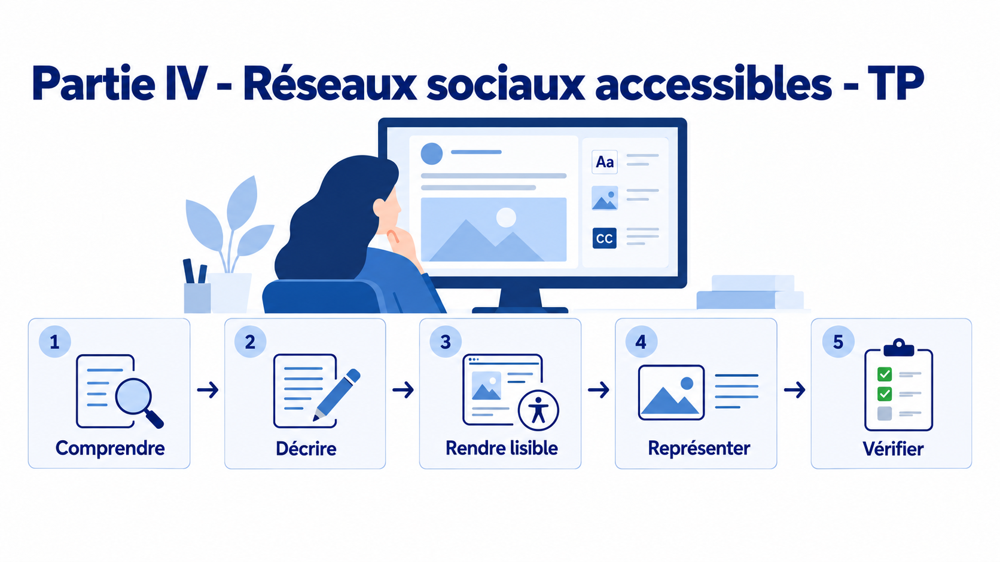
Rubrique
Partie IV | Plan
Plan
- Comprendre les enjeux des réseaux sociaux
- Décrire les images et choisir les plateformes
- Rendre les textes et les caractères lisibles
- Représenter les publics et écrire clairement
- Vérifier avant de publier
Message à retenir
La partie suit cinq étapes, de la compréhension des enjeux à la vérification avant publication.
Progression du module
- Annoncer les cinq thèmes qui structurent la partie IV.
- Préciser que la progression va de l’analyse d’un post à la vérification complète avant publication.
Question d'accroche
- Question d'accroche : Qui a déjà publié une photo sans texte alternatif ?
- Toutes les mains levées - c'est le problème qu'on va résoudre.
Slide 2 - Pourquoi l'accessibilité sur les réseaux ?
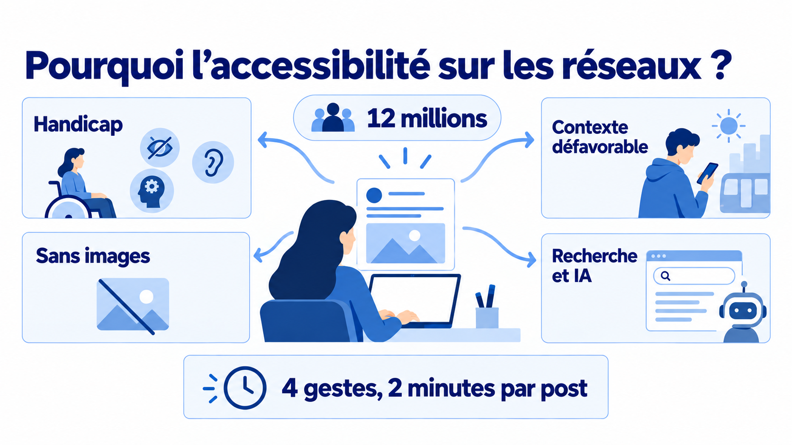
Rubrique
4. Réseaux sociaux
Les réseaux sociaux sont devenus un canal officiel de communication publique - et donc soumis aux mêmes obligations d'accessibilité.
Votre audience est plus large que vous ne le pensez
- 12 millions de personnes en situation de handicap en France (INSEE 2021)
- Utilisateurs en contexte défavorable : faible luminosité, connexion lente, bruit
- Moteurs de recherche et outils d'IA qui analysent vos contenus
- Collègues et citoyens qui lisent sans images activées
4 gestes, 2 minutes par post
- Geste 1 - Texte alternatif : décrire chaque image en 1 phrase
- Geste 2 - Émojis : 1 ou 2 maximum, en fin de message
- Geste 3 - Hashtags : CamelCase et regroupés en fin de post
- Geste 4 - Texte natif : jamais de faux gras ou faux italique
Message à retenir
L’accessibilité élargit réellement l’audience et repose sur quatre gestes simples.
Votre audience est plus large que vous ne le pensez
- La stat des 12 millions vient de l'INSEE (enquête Handicap-Santé 2021).
- Ne pas chercher à impressionner avec des chiffres spectaculaires - le vrai impact c'est 'quelqu'un dans votre public ne pourra pas lire ce post'.
4 gestes, 2 minutes par post
- Annoncer la structure : 4 gestes que vous allez voir en détail.
Question d'accroche
- Commencer par une question : 'Sur vos 10 derniers posts, combien avaient un texte alternatif sur les images ?'
Slide 3 - Regardez ce tweet - qu'est-ce qui ne va pas ?
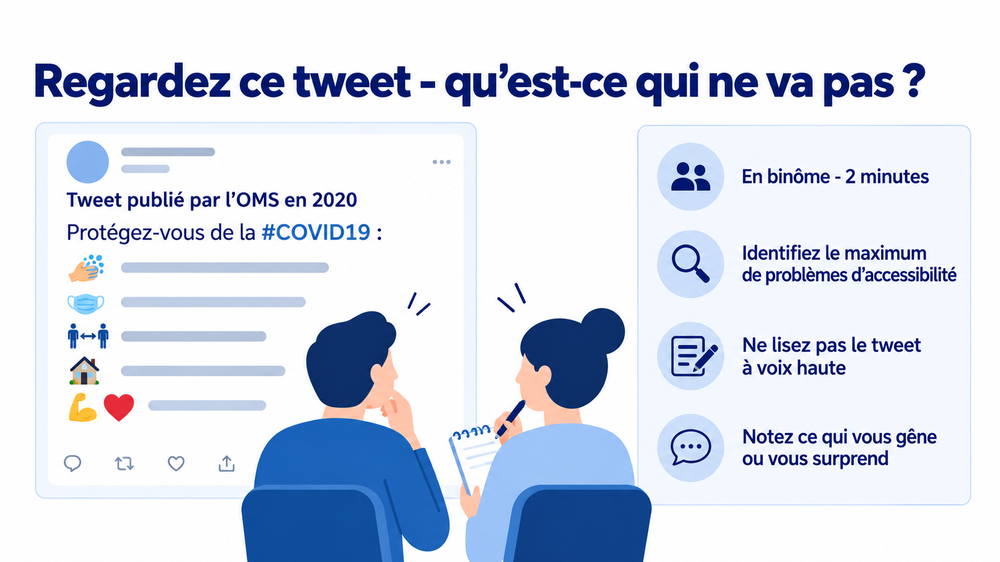
Rubrique
4. Réseaux sociaux | Cas pratique
Tweet publié par l'OMS en 2020
Protégez-vous de la #COVID19 :
Lavez-vous les 👐 avec 1 désinfectant à base d'alcool, du 🧼 & de l'💦.
Quand vous toussez ou 🤧 couvrez votre 👄 & le 👃🏻 dans le pli du coude ou mouchoir.
Évitez de toucher les 👀, le 👃 & la 👄.
En binôme - 2 minutes
- Identifiez le maximum de problèmes d'accessibilité
- Ne lisez pas le tweet à voix haute
- Notez ce qui vous gêne ou vous surprend
Message à retenir
Le problème n’est pas toujours visible : il faut analyser le post sans le lire à voix haute.
En binôme - 2 minutes
- Ne rien dire.
- Distribuer la consigne, laisser 2 minutes en silence.
Réponses possibles
- Certains stagiaires vont identifier les émojis, d'autres le contraste, d'autres rien.
- C'est exactement l'objectif : révéler que le problème n'est pas évident visuellement.
Mise en commun
- Recueillir les réponses à l'oral avant de passer à la slide suivante.
Slide 4 - Ce que vous voyez ≠ ce qui est lu
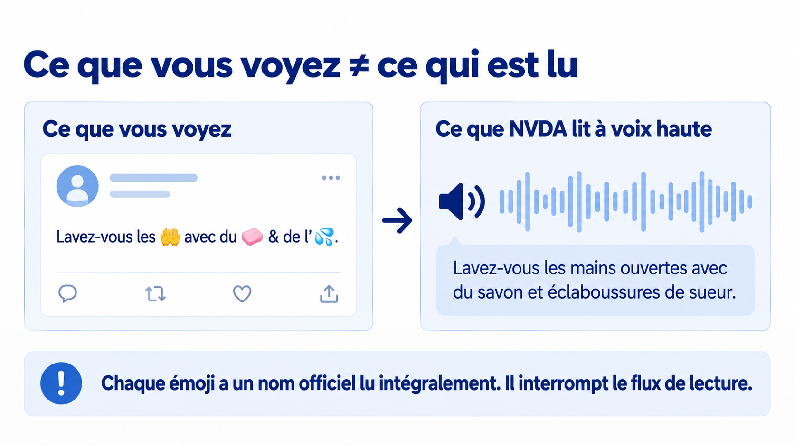
Rubrique
4. Réseaux sociaux | Cas pratique
Ce que vous voyez
- Lavez-vous les 👐 avec du 🧼 & de l'💦.
- Quand vous toussez ou 🤧 couvrez votre 👄.
- Évitez de toucher les 👀, le 👃 & la 👄.
Ce que NVDA lit à voix haute
- Lavez-vous les mains ouvertes avec du savon et éclaboussures de sueur.
- Quand vous toussez ou visage qui éternue couvrez votre bouche.
- Évitez de toucher les yeux grand ouverts, le nez et la bouche.
Chaque émoji a un nom officiel lu intégralement. Il interrompt le flux de lecture.
Message à retenir
Un émoji ajoute sa dénomination complète à la lecture et peut brouiller le message.
Ce que NVDA lit à voix haute
- Lire à voix haute la colonne de droite avec le ton d'un lecteur d'écran - monotone, sans pause.
- Silence après la lecture.
- Laisser l'absurdité s'installer.
Effet de surprise
- L'effet de surprise est la meilleure colle mémorielle ici.
Question au groupe
- Ne pas commenter immédiatement - poser la question : 'Qui aurait pensé à ça en publiant ?'
Slide 5 - 3 changements, 0 perte de sens
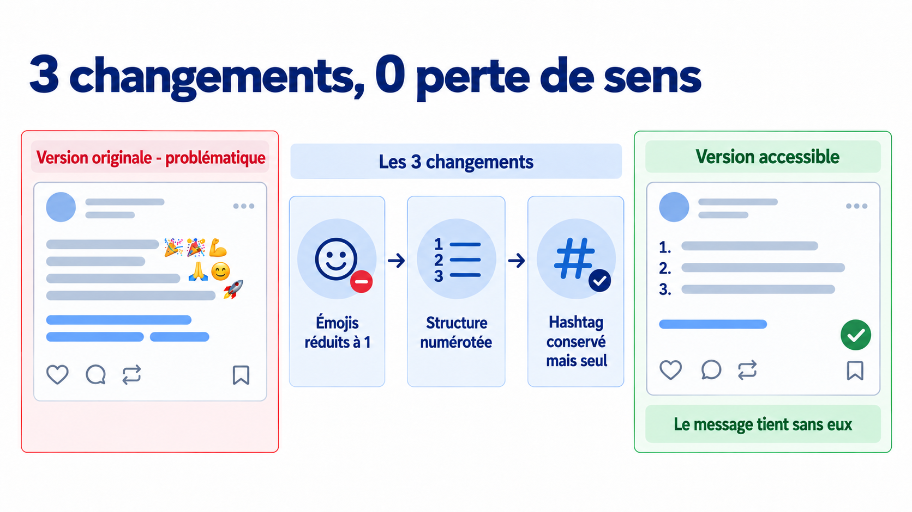
Rubrique
4. Réseaux sociaux | Cas pratique
Version originale - problématique
- Lavez-vous les 👐 avec 1 désinfectant à base d'alcool, du 🧼 & de l'💦.
- Quand vous toussez ou 🤧 couvrez votre 👄 & le 👃🏻.
- Évitez de toucher les 👀, le 👃 & la 👄.
Version accessible
Protégez-vous du #COVID19 - trois gestes essentiels :
- Lavez-vous régulièrement les mains avec du savon et de l'eau 🧼
- Quand vous toussez, couvrez-vous avec le pli du coude
- Évitez de toucher votre visage
Les 3 changements
- Émojis réduits à 1, placé en fin de phrase - le message tient sans eux
- Structure numérotée - navigation facile pour tous les utilisateurs
- Hashtag conservé mais seul, séparé du texte informatif
Message à retenir
Réduire les émojis, numéroter et isoler le hashtag améliore la clarté sans perte d’information.
Message clé
- Insister : aucune information perdue.
- Le message est même plus clair pour tout le monde.
- L'accessibilité améliore la qualité pour tous, pas seulement pour les personnes handicapées.
Question au groupe
- Question à poser : 'Combien de temps faut-il pour faire ces 3 modifications ?' - Réponse : 2 minutes.
Slide 6 - Démonstration NVDA - le lecteur d'écran en direct
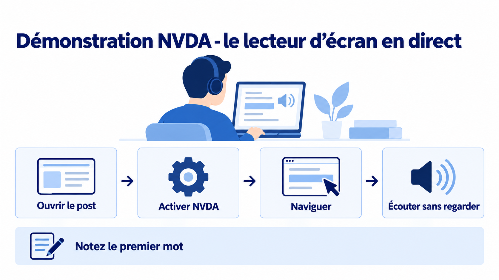
Rubrique
4. Réseaux sociaux | Démonstration
Étapes
- Ouvrir le post problématique préparé (avec émojis en série)
- Activer NVDA : Ctrl+Alt+N - une voix démarre
- Naviguer sur le texte : flèches ou Tab
- Écouter la restitution - ne pas regarder l'écran
Pour les stagiaires pendant la démo
- Fermez les yeux ou regardez ailleurs - écoutez uniquement
- Notez le premier mot qui vous vient à l'écoute
Message à retenir
Écouter sans regarder révèle immédiatement les obstacles de restitution.
Préparer la démonstration
- Post à préparer avant la session : un post LinkedIn ou Twitter avec 5-6 émojis en série et un hashtag sans CamelCase.
- L'effet est immédiatement compréhensible.
Commandes
- NVDA : Ctrl+Alt+N pour démarrer, Insert+Q pour quitter.
- Si NVDA n'est pas disponible, utiliser Narrateur Windows (Win+Ctrl+Entrée).
Déroulé
- Durée de la démo : 5 minutes max.
- Laisser ensuite 5 minutes aux stagiaires pour tester eux-mêmes sur leur propre PC si le temps le permet.
Slide 7 - 4 réflexes, puis une checklist complète
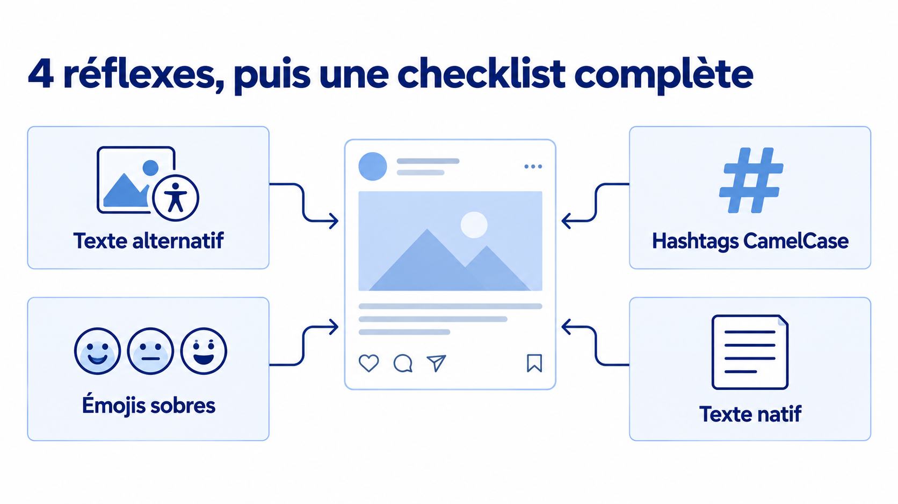
Rubrique
4. Réseaux sociaux | Réflexes
1. Texte alternatif
- Décrire chaque image en 1 à 2 phrases
- Image décorative : utiliser l’option « Décorative » si la plateforme la propose. Sinon, indiquer « Image décorative » dans le texte alternatif.
2. Émojis sobres
- 1 ou 2 maximum, en fin de message uniquement
- Le texte doit avoir du sens sans eux
3. Hashtags CamelCase
- #ServicePublic pas #servicepublic
- Rassembler en fin de post, 2 à 3 maximum
4. Texte natif
- Jamais de faux gras ou faux italique (InstaFont ...)
- Les caractères Unicode stylisés sont illisibles par les lecteurs d'écran
Message à retenir
Quatre réflexes constituent le noyau dur avant la checklist complète.
Rôle de la slide
- Cette slide sert de boussole pour tout le module.
- Y revenir à la fin.
- Chaque réflexe sera détaillé dans les slides suivantes.
Message clé
- Le message clé : 4 actions, 2 minutes par publication, zéro compétence technique requise.
Transition vers la checklist
- Verbaliser la transition : ces 4 réflexes sont le noyau dur.
- En fin de module, ils seront replacés dans une checklist plus complète en 3 temps : anticiper, rédiger, publier.
Slide 8 - Le texte alternatif : votre sous-titre d'image
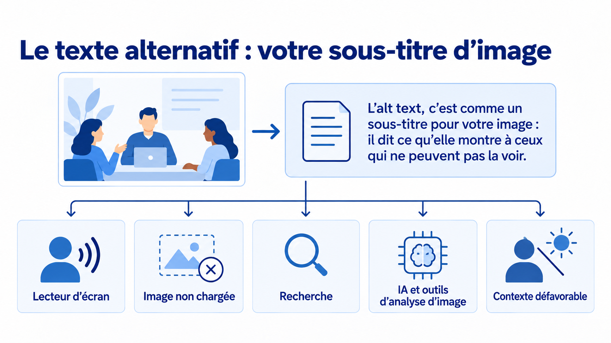
Rubrique
4. Réseaux sociaux | Alt text
L'alt text, c'est comme un sous-titre pour votre image : il dit ce qu'elle montre à ceux qui ne peuvent pas la voir.
Qui en bénéficie ?
- Personnes aveugles ou malvoyantes (lecteur d'écran)
- Connexion lente ou image non chargée
- Moteurs de recherche (Google indexe via l'alt text)
- IA et outils d'analyse d'image
- Contexte défavorable (luminosité, etc.)
Concrètement sur les réseaux
- LinkedIn : Modifier → Texte alternatif
- Facebook : Modifier l'image → Alt text
- Twitter/X : intégré à la publication
- Instagram : Paramètres avancés → Alt text
- Canva : Clic droit → Texte alternatif
Message à retenir
Le texte alternatif permet de transmettre l’information de l’image à plusieurs publics et outils.
Analogie du sous-titre
- L'analogie du sous-titre fonctionne très bien - tout le monde comprend immédiatement.
Bénéfice complémentaire
- Insister sur le fait que ça bénéficie AUSSI au référencement : argument qui convainc les agents qui ne sont pas sensibles à l'accessibilité pure.
Démonstration
- Montrer rapidement où trouver le champ alt text sur LinkedIn (le plus utilisé en contexte pro).
Transition
- Ne pas aller dans le détail de toutes les plateformes ici - ça sera dans le tableau comparatif.
Slide 9 - Comment rédiger un bon texte alternatif ?
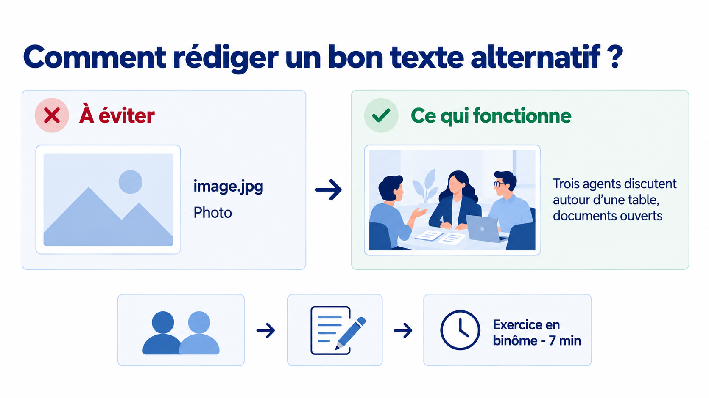
Rubrique
4. Réseaux sociaux | Alt text
À éviter
- « image.jpg » - nom de fichier, aucun sens
- « Photo » - trop vague, aucune information
- « Image de la réunion du 12 mars 2026 » - date inutile sans contexte
- « Voir l'image ci-dessous » - redondant, ne décrit rien
Ce qui fonctionne
- « Trois agents discutent autour d'une table, documents ouverts »
- « Logo DINUM - bleu avec texte blanc »
- « Graphique : le taux d'accessibilité passe de 45 à 78 % entre 2023 et 2025 »
- « Infographie : 4 étapes pour publier un post accessible (texte ci-dessous) »
Exercice en binôme (7 min)
Rédigez l'alt text pour 3 images que vous avez publiées récemment sur vos réseaux professionnels.
Message à retenir
Un bon texte alternatif décrit l’information utile à la compréhension du message.
Règle d'or
- La règle d'or : décrire ce qui est utile pour comprendre le message, pas ce qui est visible.
Exemples
- Une photo de groupe sans texte = "Équipe de 5 agents en réunion de travail".
- Une infographie avec des chiffres = décrire les chiffres clés dans l'alt text OU dire que le détail est dans le texte du post.
Mise en commun
- Recueillir 1-2 exemples à l'oral avant de passer à la slide suivante.
Slide 10 - Alt text : où le trouver sur chaque plateforme ?
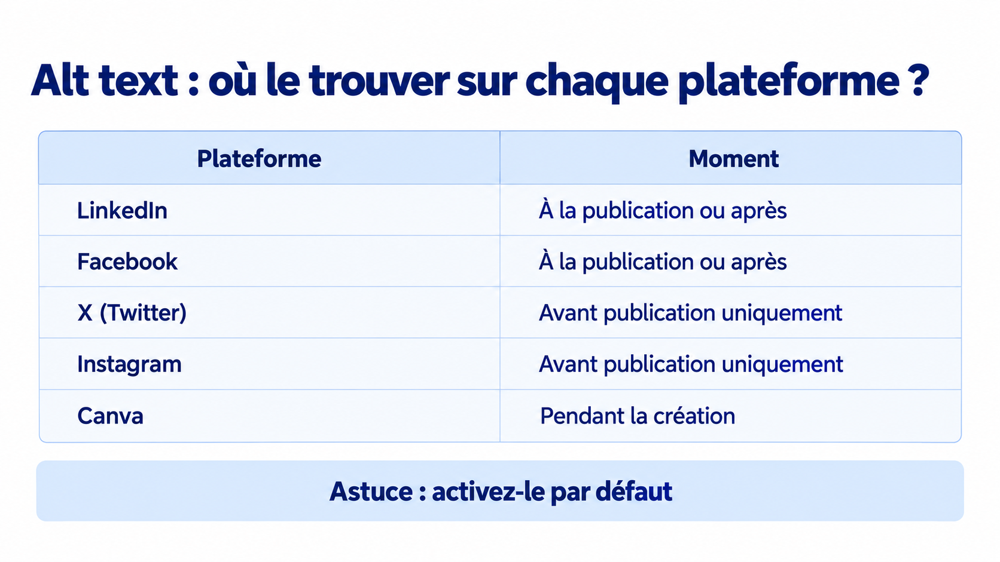
Rubrique
4. Réseaux sociaux | Plateformes
Tableau comparatif
| Plateforme | Accès | Moment |
|---|---|---|
| LinkedIn | Modifier la publication > modifier l'image > Ajouter du texte alternatif | À la publication ou après |
| Facebook | Modifier la photo > Texte alternatif | À la publication ou après |
| X (Twitter) | Ajouter une description (icône Accessibilité sous l'image) | Avant publication uniquement |
| Instagram | Paramètres avancés > Accessibilité > Écrire le texte alternatif | Avant publication uniquement |
| Canva | Clic droit sur l'image > Texte alternatif | Pendant la création |
Astuce : activez-le par défaut
- LinkedIn et Instagram proposent un rappel si vous oubliez l'alt text
- X : paramètre Accessibilité dans les réglages de compte
Message à retenir
Le champ existe sur cinq plateformes, mais son emplacement et son moment d’utilisation diffèrent.
Utiliser le tableau
- Ne pas lire le tableau ligne par ligne - il sert de mémo à imprimer ou photographier.
Points d'attention
- Insister : sur X/Twitter il faut le faire AVANT de publier, on ne peut pas l'ajouter après.
- Sur LinkedIn c'est possible après coup, donc pas d'excuse.
Ressource
- Un mémo PDF plus complet sera distribué à la fin du module.
Slide 11 - Émojis : 3 règles simples
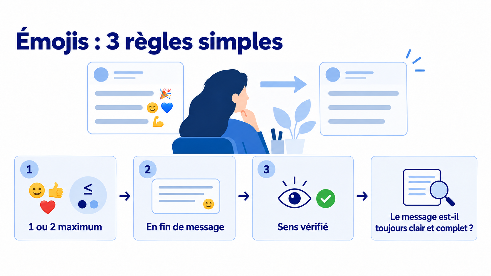
Rubrique
4. Réseaux sociaux | Émojis
Un lecteur d'écran lit le nom officiel de chaque émoji. En série, c'est incompréhensible.
3 règles simples
- 1 ou 2 émojis par post maximum - au-delà, le sens se perd à l'écoute
- En fin de message - jamais au début ni à la place d'un mot
- Vérifier leur sens réel - puis tester le texte sans eux
Test rapide avant publication
- Retirez tous les émojis du texte
- Le message est-il toujours clair et complet ? Si oui : bon signe
- Si non : l'émoji porte du sens - remplacez-le par le mot correspondant
Message à retenir
Un émoji reste acceptable si le message demeure clair et complet sans lui.
Test rapide avant publication
- La règle du test : retirer l'émoji et voir si le message tient.
Vérifier le sens
- Ajouter : vérifier le sens réel de l'émoji avant publication, car certains symboles n'ont pas le même sens selon les publics ou les plateformes.
Exemples
- Exemple : 'Rejoignez-nous mardi prochain !' vs 'Rejoignez-nous mardi prochain !📅' - le calendrier ne porte pas de sens supplémentaire ici, c'est décoratif.
- Mais '🚨 Fermeture exceptionnelle' : l'émoji alerte sert vraiment de signal.
- Dans ce cas il faut écrire 'ALERTE - Fermeture exceptionnelle' et mettre l'émoji après.
Slide 12 - Ce que ça donne avec trop d'émojis
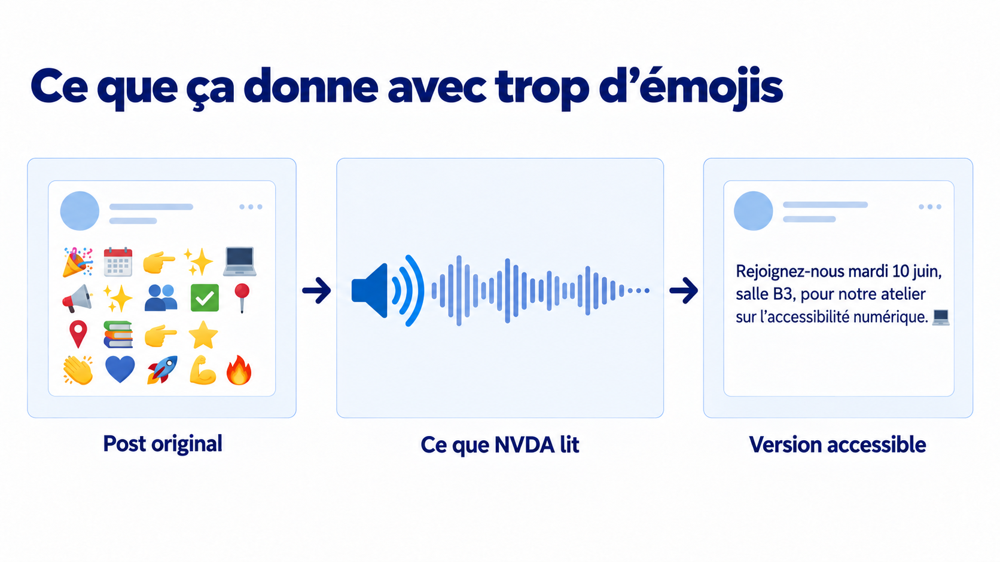
Rubrique
4. Réseaux sociaux | Émojis
Post original
🎉🎉 Rejoignez-nous 📅 mardi 10 juin 🏢 salle B3 pour notre atelier 💻 sur l'accessibilité 🧠 numérique 👏👏
Ce que NVDA lit
Visage qui fête quelque chose. Visage qui fête quelque chose. Rejoignez-nous. Calendrier spirale. mardi 10 juin. Bâtiment de bureau. salle B3 pour notre atelier. Ordinateur portable. sur l'accessibilité. Cerveau. numérique. Mains qui applaudissent, peau claire. Mains qui applaudissent, peau claire.
Version accessible
Rejoignez-nous mardi 10 juin, salle B3, pour notre atelier sur l'accessibilité numérique. 💻
Message à retenir
L’excès d’émojis transforme une phrase courte en une vocalisation longue et difficile à suivre.
Démonstration
- Lire la colonne de droite à voix haute, d'une seule traite, sans intonation.
- L'effet est immédiat.
- Puis lire la version accessible : nette et compréhensible.
Question au groupe
- Question à poser : 'Combien de temps pour corriger ce post ?' - 30 secondes.
Conclusion
- L'information est la même, la lisibilité est incomparablement meilleure.
Slide 13 - Hashtags : le CamelCase qui change tout
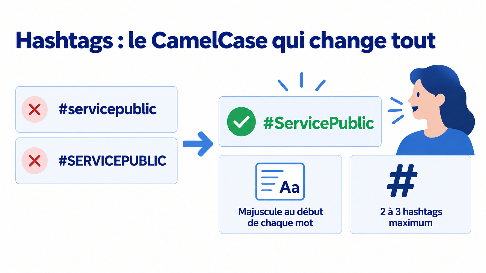
Rubrique
4. Réseaux sociaux | Hashtags
Pourquoi le CamelCase ?
- #ServicePublic : les mots sont séparés naturellement
- #servicepublic : un seul bloc, plus difficile à comprendre
- #SERVICEPUBLIC : risque de lecture lettre par lettre
3 règles avant publication
- Majuscule au début de chaque mot
- Hashtags regroupés à la fin du post
- 2 à 3 maximum, courts et utiles
Mini-test
Relisez le hashtag à voix haute. Si vous hésitez sur les mots, raccourcissez-le ou ajoutez les majuscules.
Message à retenir
Le CamelCase sépare les mots et facilite la lecture visuelle comme orale.
Exemple d'entrée
- L'anecdote Susan Boyle : en 2012 le label de Susan Boyle a lancé le hashtag #susanalbumparty pour son album.
- Sans CamelCase, le lecteur d'écran (et les humains !) lisaient quelque chose de très différent.
- Depuis, le CamelCase est la norme sur toutes les plateformes.
Règle de longueur
- Ajouter le critère de longueur : un hashtag trop long devient difficile à lire, à mémoriser et à comprendre à l'écoute.
Message clé
- C'est une des rares règles d'accessibilité qui est aussi devenue la norme éditoriale standard - bon exemple que l'accessibilité améliore la communication pour tout le monde.
Slide 14 - Faux gras et caractères Unicode : le piège invisible
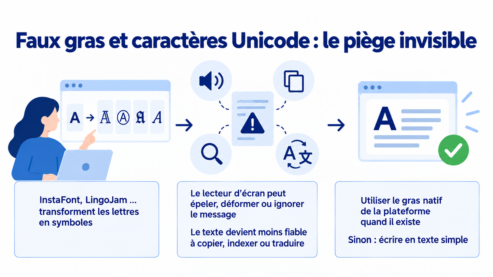
Rubrique
4. Réseaux sociaux | Caractères spéciaux
À éviter
- InstaFont, LingoJam ... transforment les lettres en symboles
- Le lecteur d'écran peut épeler, déformer ou ignorer le message
- Le texte devient moins fiable à copier, indexer ou traduire
À faire
- Utiliser le gras natif de la plateforme quand il existe
- Sinon : écrire en texte simple
- Mettre les mots importants au début du post
Test express
Si le texte vient d'un générateur de style, ne le collez pas.
Référence : Opquast règle 14 - caractères détournés.
Message à retenir
Le texte simple ou le style natif reste plus fiable que des caractères Unicode détournés.
Démonstration
- Montrer en direct sur un smartphone : aller sur InstaFont, taper 'Bonjour', copier le résultat 'faux gras', le coller dans un post test, puis activer TalkBack (Android) ou VoiceOver (iPhone) pour écouter.
- L'effet est immédiat.
Pourquoi c'est un problème
- La règle Opquast 14 est une référence AQW (Assurance Qualité Web) qui couvre aussi le SEO et la lisibilité IA - argument fort pour les agents qui ne sont pas encore convaincus par l'argument accessibilité seul.
Solution
- Solution simple : utiliser le gras natif de la plateforme (LinkedIn, Facebook permettent le formatage natif).
- Sinon, écrire en texte simple.
Slide 15 - Communication inclusive : les représentations comptent
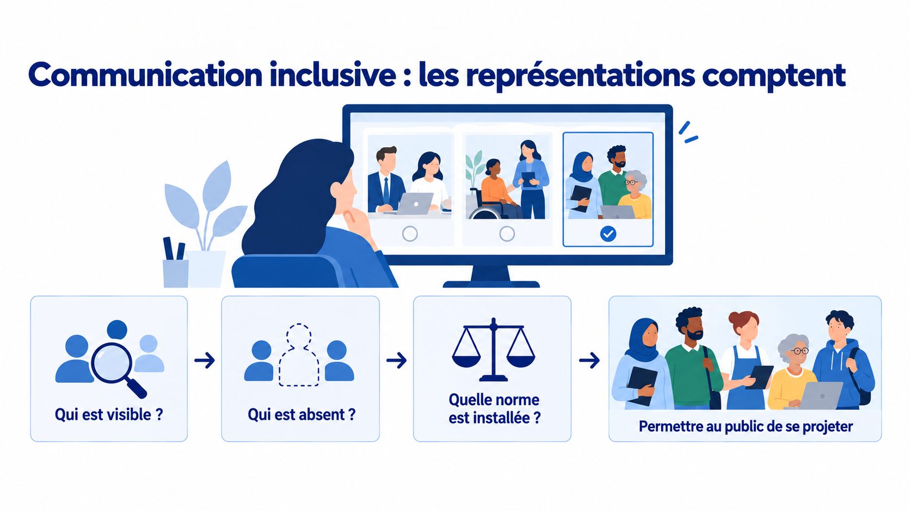
Rubrique
4. Réseaux sociaux | Communication inclusive
Une image n'est jamais neutre : elle montre qui est attendu, qui est légitime, qui est concerné.
3 questions avant de choisir un visuel
- Qui est visible dans cette communication ?
- Qui est absent ou toujours montré en marge ?
- Quelle norme le visuel installe-t-il sans le dire ?
Pourquoi c'est important
- Les personnes concernées peuvent se sentir attendues
- La communication évite de reconduire une seule norme
- Le public se projette plus facilement dans le message
Message à retenir
Choisir une image revient aussi à décider qui est montré comme attendu, légitime et concerné.
Entrée par les images
- Introduire la communication inclusive par les images, pas par le vocabulaire.
- Cela évite de réduire le sujet à l'écriture inclusive.
Ce que transmettent les visuels
- Expliquer que les photos, illustrations et vidéos transmettent des normes : âge, genre, handicap, origine, corpulence, situation sociale.
Posture
- Ne pas culpabiliser les stagiaires : l'objectif est de créer un réflexe de sélection.
Slide 16 - Représenter sans faire vitrine
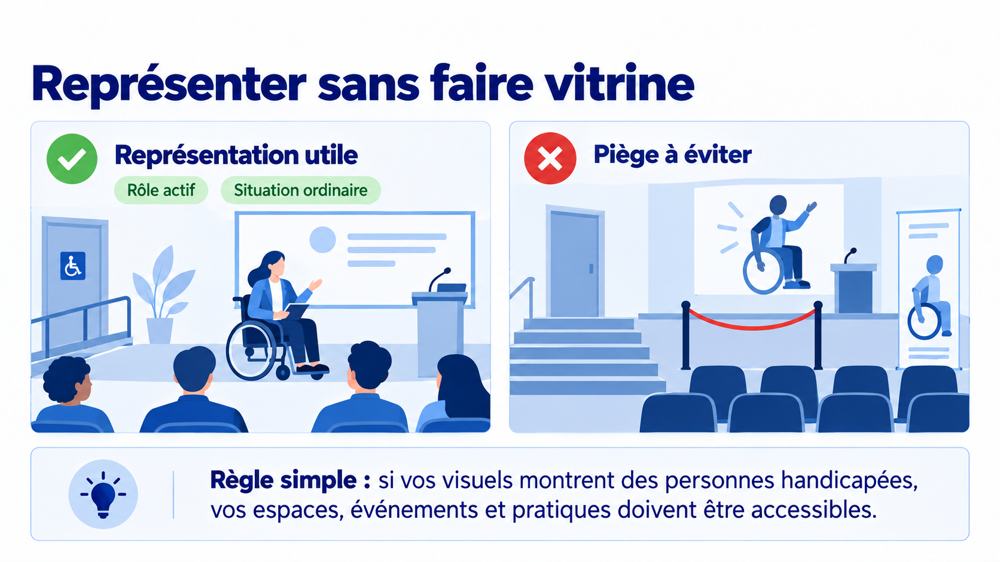
Rubrique
4. Réseaux sociaux | Communication inclusive
Représentation utile
- Diversité montrée dans des situations ordinaires
- Personnes concernées en rôle actif, pas seulement décoratif
- Visuel cohérent avec le public réel de l'action
Piège à éviter
- Image symbolique sans réalité derrière
- Personne réduite à son handicap ou à son identité
- Événement annoncé inclusif mais non accessible
Règle simple
Si vos visuels montrent des personnes handicapées, vos espaces, événements et pratiques doivent être accessibles.
Message à retenir
Une représentation inclusive n’a de sens que si l’expérience réelle l’est aussi.
Point d'attention
- Le point délicat : éviter la représentation opportuniste.
- Dire clairement qu'un visuel inclusif ne compense pas une organisation inaccessible.
Exemple
- Exemple : montrer une personne en fauteuil dans la communication d'un événement alors que le lieu, l'inscription ou les supports ne sont pas accessibles.
Lien avec l'exercice
- Faire le lien avec l'exercice : la checklist doit vérifier aussi la cohérence réelle.
Slide 17 - Langage inclusif : clarté d'abord
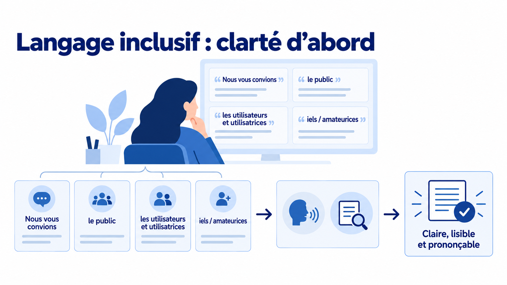
Rubrique
4. Réseaux sociaux | Communication inclusive
À privilégier
- Formules épicènes : « Nous vous convions », « les personnes concernées »
- Mots collectifs : « le public », « l'équipe », « la clientèle »
- Double flexion si nécessaire : « les utilisateurs et utilisatrices »
- Mots-valises si le public les comprend : « iels », « amateurices »
À éviter ou tester
- Point médian ou ponctuation répétée quand cela gêne la lecture
- Formes trop compressées : elles ralentissent aussi la lecture visuelle
- Formes ambiguës à l'oral si le message doit être lu à voix haute
Recommandation
Choisir la forme la plus inclusive qui reste claire, lisible et prononçable.
Message à retenir
La meilleure formulation inclusive est celle qui reste claire, lisible et prononçable.
Posture
- Sujet sensible à traiter avec neutralité : le critère est la compréhension.
Évolution des usages
- Les synthèses vocales et les usages évoluent rapidement ; une forme mal acceptée aujourd'hui peut devenir plus lisible demain.
- En revanche, la charge de lecture reste un vrai sujet pour les personnes dyslexiques ou fatiguées cognitivement.
Conseil pratique
- Conseil pratique : privilégier d'abord les formules épicènes et les mots collectifs, puis la double flexion si le contexte exige de nommer explicitement les genres.
Slide 18 - Exercice en binôme : passez la checklist
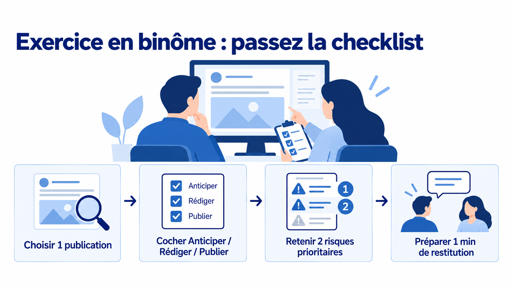
Rubrique
4. Réseaux sociaux | Exercice
Choisissez un post réel ou un exemple fourni. Objectif : trouver 2 améliorations utiles : accès, lisibilité ou représentation.
Étapes
- Choisir 1 publication
- Cocher Anticiper / Rédiger / Publier
- Retenir 2 risques prioritaires
- Préparer 1 min de restitution
Déroulé
- 3 min : choisir le post et le contexte
- 8 min : passer les 3 checklists
- 4 min : formuler 2 corrections
À restituer
- Le point le plus bloquant
- La correction proposée
- La règle à garder pour vos prochains posts
Message à retenir
La checklist sert à transformer l’observation d’un post en deux améliorations concrètes et prioritaires.
Former les binômes
- Former des binômes.
- Si les stagiaires n'ont pas de publication sous la main, proposer un post exemple préparé par le formateur.
Prioriser
- La consigne limite volontairement à 2 améliorations : on cherche la priorisation, pas l'exhaustivité.
- Encourager les binômes à choisir au moins un point lié aux représentations si le post contient un visuel.
Accompagner
- Pendant l'exercice, circuler et donner un feedback immédiat sur les arbitrages.
Restituer
- La restitution orale active l'apprentissage social : chaque binôme enseigne un point au groupe.
Slide 19 - Checklist réseaux sociaux : anticiper (1/3)
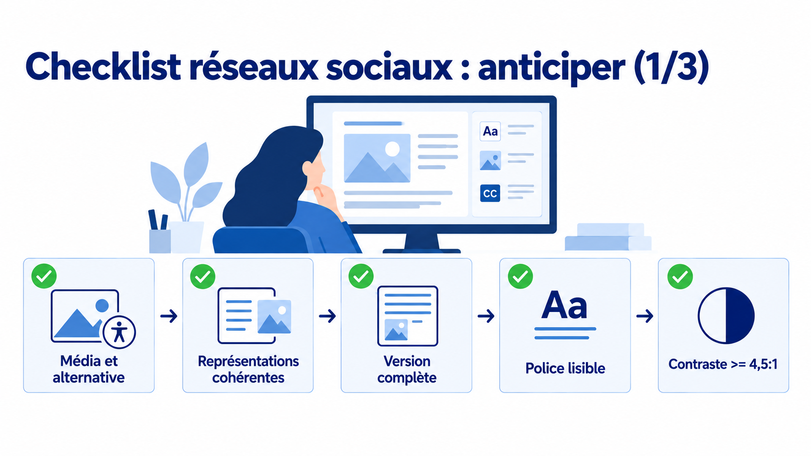
Rubrique
4. Réseaux sociaux | Checklist
Avant de créer : l'information doit exister en version accessible, pas seulement dans le visuel.
Points à vérifier
- Média prévu ? image = alt text, audio = transcription, vidéo = sous-titres
- Visuels : représentations diverses et cohérentes avec la réalité accessible
- Visuel très chargé ? prévoir une version complète en ligne ou dans le post
- Police lisible, sans fantaisie, assez épaisse pour un écran mobile
- Texte sur image : contraste >= 4,5:1, pas de fond qui gêne la lecture
Message à retenir
L’accessibilité se prépare avant la création du visuel.
Utiliser la checklist
- Cette première checklist est un support d'exercice.
- Les binômes cochent uniquement ce qu'ils peuvent vérifier sur leur publication.
Évaluer sans juger
- Le point représentation doit être traité sans procès d'intention : on évalue le choix éditorial et sa cohérence avec l'action réelle.
Anticiper l'accessibilité
- L'objectif est d'éviter le piège classique : tenter de réparer à la publication un visuel qui porte toute l'information.
- Faire le lien avec Word : comme pour un document, on gagne du temps quand l'accessibilité est pensée avant la mise en forme.
Slide 20 - Checklist réseaux sociaux : rédiger (2/3)
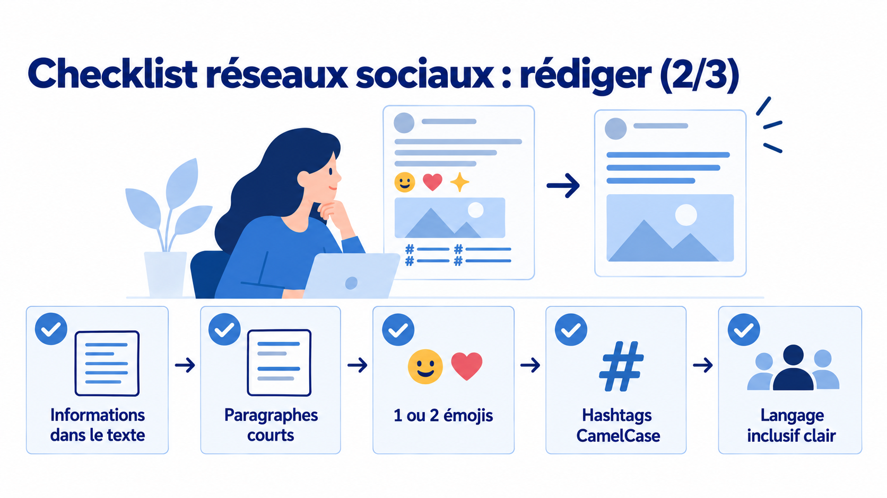
Rubrique
4. Réseaux sociaux | Checklist
Le post doit rester compréhensible quand on retire l'image, les effets visuels et les émojis.
Points à vérifier
- Informations essentielles écrites dans le texte du post
- Paragraphes courts, texte natif, pas de faux gras Unicode
- Émojis : 1 ou 2, en fin de message, sens vérifié
- Hashtags : CamelCase, courts, regroupés à la fin, 2 ou 3 maximum
- Langage inclusif clair : épicène, double flexion ou mot-valise compris
Message à retenir
Le post doit rester compréhensible quand on retire l’image, les effets visuels et les émojis.
Transformer les règles en routine
- Cette slide transforme les règles vues une par une en routine éditoriale.
Prioriser
- Demander aux binômes de cocher les cinq points sur le post choisi, puis de sélectionner un seul problème prioritaire.
Test de clarté
- Pour le langage inclusif, demander : est-ce que la phrase reste claire à l'écoute et à la lecture rapide ?
- Le test UX est simple : si le sens disparaît quand on retire les effets, le post dépend trop de sa mise en forme.
Slide 21 - Checklist réseaux sociaux : publier (3/3)
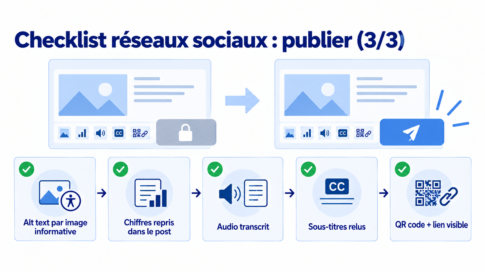
Rubrique
4. Réseaux sociaux | Checklist
Juste avant de cliquer : chaque accès visuel ou sonore doit avoir une alternative visible.
Points à vérifier
- Alt text clair et unique pour chaque image informative
- Infographie ou carrousel : chiffres et messages clés repris dans le post
- Audio : transcription écrite jointe ou lien visible
- Vidéo : sous-titres relus, transcription si nécessaire
- QR code jamais seul : lien visible + « Scannez-moi ! », taille et contraste
Message à retenir
Avant publication, chaque information visuelle ou sonore doit disposer d’un autre accès.
Vérifier les alternatives
- Dernière checklist de l'exercice.
- Demander aux binômes de vérifier les alternatives qui manquent vraiment sur leur publication.
Accès multiple
- Insister sur la logique d'accès multiple : une information importante ne doit jamais dépendre d'un seul canal.
QR codes
- Pour les QR codes, rappeler la règle corrigée dans le deck : le QR code aide, mais le lien visible reste indispensable.
Slide 22 - Des questions ?
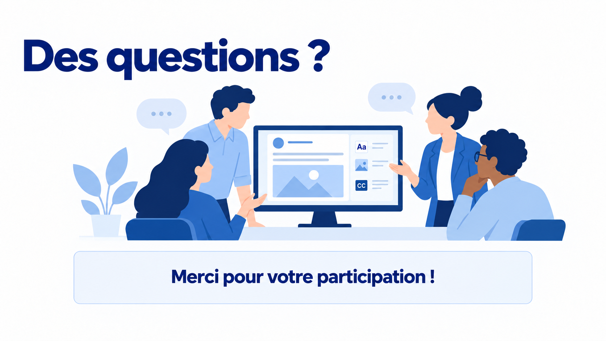
Rubrique
Clôture
Merci pour votre participation !
Message à retenir
La séquence se termine par un temps de questions et de partage.
Questions
- Laisser un temps pour les questions.
Après la formation
- Rappeler que les stagiaires peuvent nous contacter par mail pour toute question post-formation.